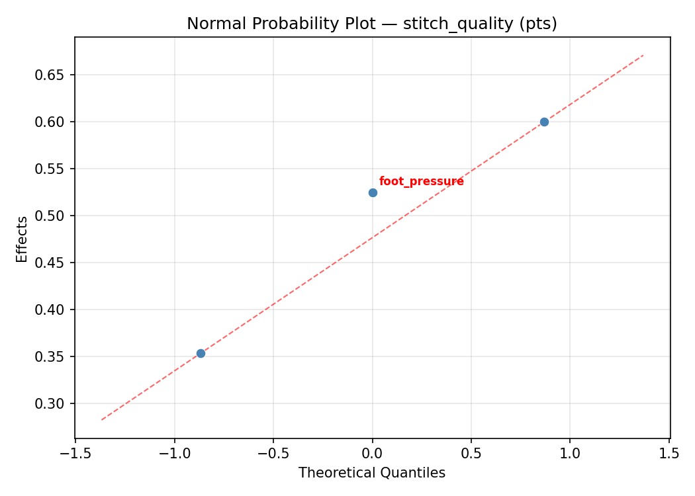
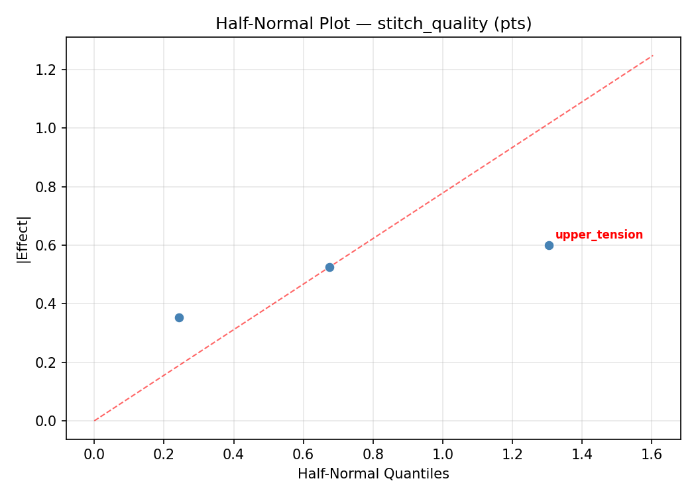
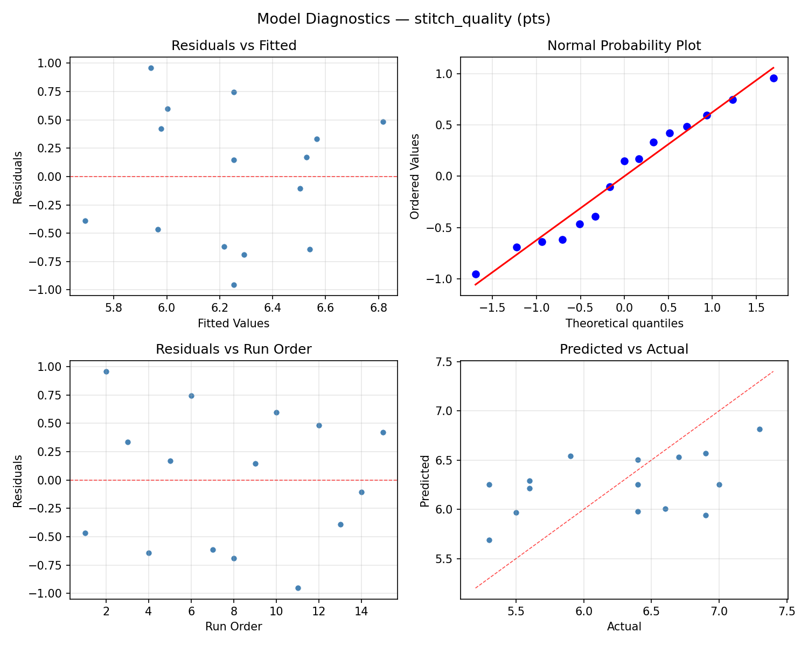
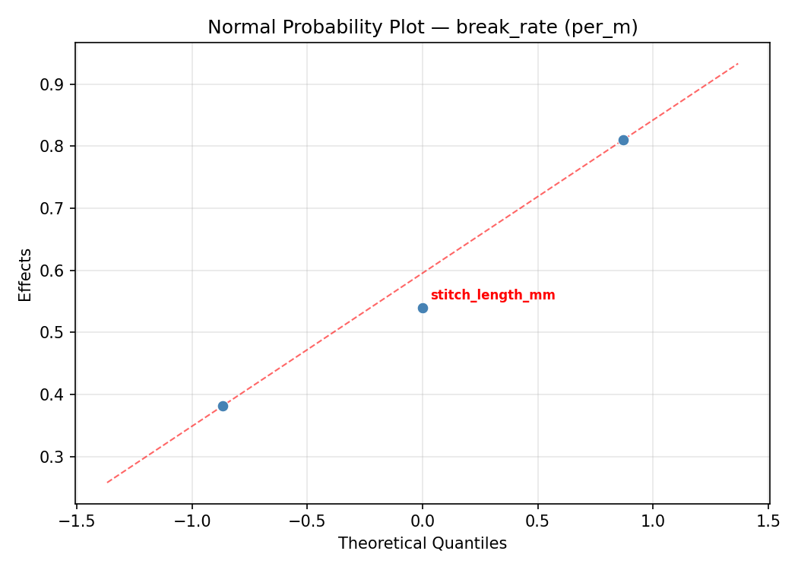
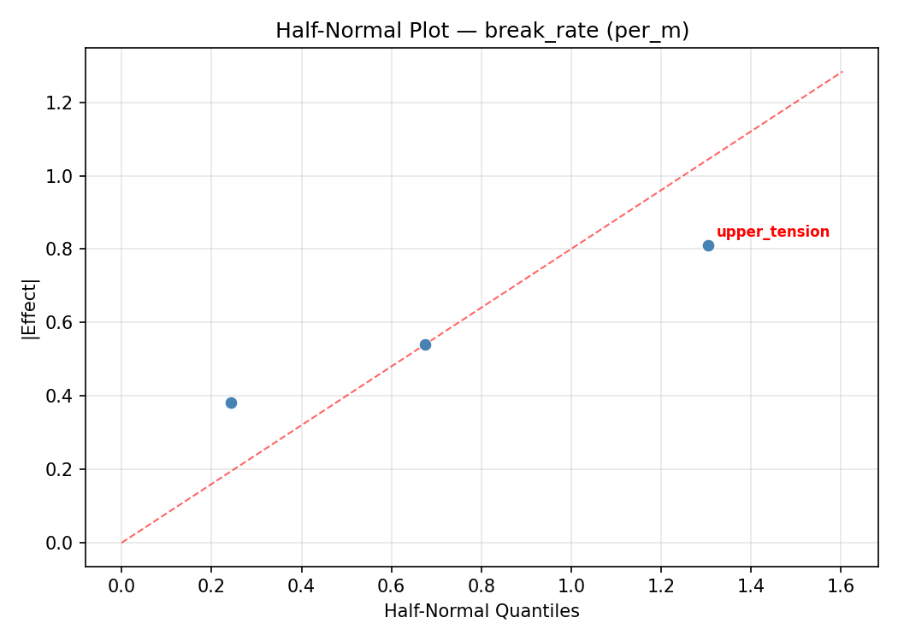
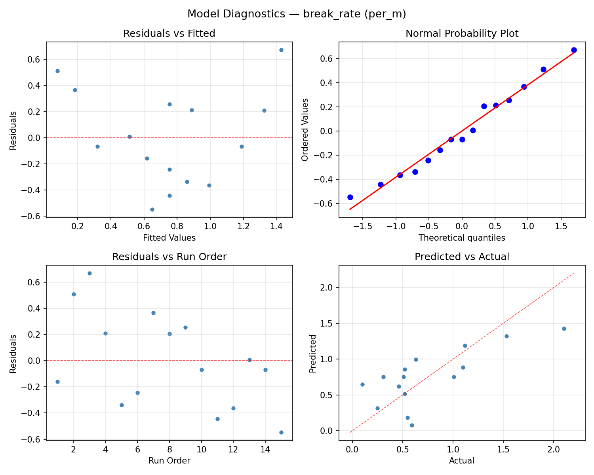

Summary
This experiment investigates sewing machine stitch quality. Box-Behnken design to maximize stitch quality and minimize thread breakage by tuning upper tension, stitch length, and presser foot pressure.
The design varies 3 factors: upper tension (dial), ranging from 2 to 7, stitch length mm (mm), ranging from 1.5 to 4.0, and foot pressure (level), ranging from 1 to 5. The goal is to optimize 2 responses: stitch quality (pts) (maximize) and break rate (per_m) (minimize). Fixed conditions held constant across all runs include machine = mechanical, fabric = cotton_twill.
A Box-Behnken design was chosen because it efficiently fits quadratic models with 3 continuous factors while avoiding extreme corner combinations — requiring only 15 runs instead of the 8 needed for a full factorial at two levels.
Quadratic response surface models were fitted to capture potential curvature and factor interactions. The RSM contour plots below visualize how pairs of factors jointly affect each response.
Key Findings
For stitch quality, the most influential factors were foot pressure (36.7%), upper tension (36.0%), stitch length mm (27.3%). The best observed value was 7.3 (at upper tension = 4.5, stitch length mm = 4, foot pressure = 1).
For break rate, the most influential factors were stitch length mm (40.3%), foot pressure (30.0%), upper tension (29.7%). The best observed value was 0.1 (at upper tension = 4.5, stitch length mm = 1.5, foot pressure = 5).
Recommended Next Steps
- Run confirmation experiments at the predicted optimal settings to validate the model.
- Consider whether any fixed factors should be varied in a future study.
Experimental Setup
Factors
| Factor | Low | High | Unit |
|---|
upper_tension | 2 | 7 | dial |
stitch_length_mm | 1.5 | 4.0 | mm |
foot_pressure | 1 | 5 | level |
Fixed: machine = mechanical, fabric = cotton_twill
Responses
| Response | Direction | Unit |
|---|
stitch_quality | ↑ maximize | pts |
break_rate | ↓ minimize | per_m |
Configuration
{
"metadata": {
"name": "Sewing Machine Stitch Quality",
"description": "Box-Behnken design to maximize stitch quality and minimize thread breakage by tuning upper tension, stitch length, and presser foot pressure"
},
"factors": [
{
"name": "upper_tension",
"levels": [
"2",
"7"
],
"type": "continuous",
"unit": "dial"
},
{
"name": "stitch_length_mm",
"levels": [
"1.5",
"4.0"
],
"type": "continuous",
"unit": "mm"
},
{
"name": "foot_pressure",
"levels": [
"1",
"5"
],
"type": "continuous",
"unit": "level"
}
],
"fixed_factors": {
"machine": "mechanical",
"fabric": "cotton_twill"
},
"responses": [
{
"name": "stitch_quality",
"optimize": "maximize",
"unit": "pts"
},
{
"name": "break_rate",
"optimize": "minimize",
"unit": "per_m"
}
],
"settings": {
"operation": "box_behnken",
"test_script": "use_cases/179_sewing_stitch_quality/sim.sh"
}
}
Experimental Matrix
The Box-Behnken Design produces 15 runs. Each row is one experiment with specific factor settings.
| Run | upper_tension | stitch_length_mm | foot_pressure |
|---|
| 1 | 4.5 | 1.5 | 1 |
| 2 | 4.5 | 2.75 | 3 |
| 3 | 7 | 2.75 | 5 |
| 4 | 7 | 2.75 | 1 |
| 5 | 4.5 | 2.75 | 3 |
| 6 | 4.5 | 2.75 | 3 |
| 7 | 2 | 2.75 | 5 |
| 8 | 7 | 1.5 | 3 |
| 9 | 4.5 | 1.5 | 5 |
| 10 | 7 | 4 | 3 |
| 11 | 2 | 2.75 | 1 |
| 12 | 4.5 | 4 | 5 |
| 13 | 2 | 1.5 | 3 |
| 14 | 2 | 4 | 3 |
| 15 | 4.5 | 4 | 1 |
Step-by-Step Workflow
1
Preview the design
$ python doe.py info --config use_cases/179_sewing_stitch_quality/config.json
2
Generate the runner script
$ python doe.py generate --config use_cases/179_sewing_stitch_quality/config.json \
--output use_cases/179_sewing_stitch_quality/results/run.sh --seed 42
3
Execute the experiments
$ bash use_cases/179_sewing_stitch_quality/results/run.sh
4
Analyze results
$ python doe.py analyze --config use_cases/179_sewing_stitch_quality/config.json
5
Get optimization recommendations
$ python doe.py optimize --config use_cases/179_sewing_stitch_quality/config.json
6
Multi-objective optimization
With 2 competing responses, use --multi to find the best compromise via Derringer–Suich desirability.
$ python doe.py optimize --config use_cases/179_sewing_stitch_quality/config.json --multi
7
Generate the HTML report
$ python doe.py report --config use_cases/179_sewing_stitch_quality/config.json \
--output use_cases/179_sewing_stitch_quality/results/report.html
Features Exercised
| Feature | Value |
|---|
| Design type | box_behnken |
| Factor types | continuous (all 3) |
| Arg style | double-dash |
| Responses | 2 (stitch_quality ↑, break_rate ↓) |
| Total runs | 15 |
Analysis Results
Generated from actual experiment runs using the DOE Helper Tool.
Response: stitch_quality
Top factors: foot_pressure (36.7%), upper_tension (36.0%), stitch_length_mm (27.3%).
ANOVA
| Source | DF | SS | MS | F | p-value |
|---|
| Source | DF | SS | MS | F | p-value |
| upper_tension | 2 | 0.4727 | 0.2363 | 0.229 | 0.8000 |
| stitch_length_mm | 2 | 0.2130 | 0.1065 | 0.103 | 0.9029 |
| foot_pressure | 2 | 0.2855 | 0.1428 | 0.139 | 0.8726 |
| Lack | of | Fit | 6 | 3.2060 | 0.5343 |
| Pure | Error | 2 | 2.0600 | | |
| Error | 8 | 5.2660 | 1.0300 | | |
| Total | 14 | 6.2373 | 0.4455 | | |
Pareto Chart

Main Effects Plot

Normal Probability Plot of Effects

Half-Normal Plot of Effects

Model Diagnostics

Response: break_rate
Top factors: stitch_length_mm (40.3%), foot_pressure (30.0%), upper_tension (29.7%).
ANOVA
| Source | DF | SS | MS | F | p-value |
|---|
| Source | DF | SS | MS | F | p-value |
| upper_tension | 2 | 0.5134 | 0.2567 | 1.542 | 0.2713 |
| stitch_length_mm | 2 | 0.7383 | 0.3691 | 2.218 | 0.1713 |
| foot_pressure | 2 | 0.5395 | 0.2698 | 1.621 | 0.2565 |
| Lack | of | Fit | 6 | 1.8273 | 0.3046 |
| Pure | Error | 2 | 0.3329 | | |
| Error | 8 | 2.1602 | 0.1664 | | |
| Total | 14 | 3.9513 | 0.2822 | | |
Pareto Chart

Main Effects Plot

Normal Probability Plot of Effects

Half-Normal Plot of Effects

Model Diagnostics

Response Surface Plots
3D surfaces fitted with quadratic RSM. Red dots are observed data points.
break rate stitch length mm vs foot pressure

break rate upper tension vs foot pressure

break rate upper tension vs stitch length mm

stitch quality stitch length mm vs foot pressure

stitch quality upper tension vs foot pressure

stitch quality upper tension vs stitch length mm

Multi-Objective Optimization
When responses compete, Derringer–Suich desirability finds the best compromise.
Each response is scaled to a 0–1 desirability, then combined via a weighted geometric mean.
Overall Desirability
D = 0.8497
Per-Response Desirability
| Response | Weight | Desirability | Predicted | Dir |
|---|
stitch_quality |
1.5 |
|
7.30 0.9545 7.30 pts |
↑ |
break_rate |
1.0 |
|
0.63 0.7136 0.63 per_m |
↓ |
Recommended Settings
| Factor | Value |
|---|
upper_tension | 7 dial |
stitch_length_mm | 4 mm |
foot_pressure | 3 level |
Source: from observed run #12
Trade-off Summary
Sacrifice = how much worse than single-objective best.
| Response | Predicted | Best Observed | Sacrifice |
|---|
break_rate | 0.63 | 0.10 | +0.53 |
Top 3 Runs by Desirability
| Run | D | Factor Settings |
|---|
| #6 | 0.7978 | upper_tension=2, stitch_length_mm=4, foot_pressure=3 |
| #2 | 0.7561 | upper_tension=4.5, stitch_length_mm=2.75, foot_pressure=3 |
Model Quality
| Response | R² | Type |
|---|
break_rate | 0.1487 | linear |
Full Multi-Objective Output
============================================================
MULTI-OBJECTIVE OPTIMIZATION
Method: Derringer-Suich Desirability Function
============================================================
Overall desirability: D = 0.8497
Response Weight Desirability Predicted Direction
---------------------------------------------------------------------
stitch_quality 1.5 0.9545 7.30 pts ↑
break_rate 1.0 0.7136 0.63 per_m ↓
Recommended settings:
upper_tension = 7 dial
stitch_length_mm = 4 mm
foot_pressure = 3 level
(from observed run #12)
Trade-off summary:
stitch_quality: 7.30 (best observed: 7.30, sacrifice: +0.00)
break_rate: 0.63 (best observed: 0.10, sacrifice: +0.53)
Model quality:
stitch_quality: R² = 0.7067 (quadratic)
break_rate: R² = 0.1487 (linear)
Top 3 observed runs by overall desirability:
1. Run #12 (D=0.8497): upper_tension=7, stitch_length_mm=4, foot_pressure=3
2. Run #6 (D=0.7978): upper_tension=2, stitch_length_mm=4, foot_pressure=3
3. Run #2 (D=0.7561): upper_tension=4.5, stitch_length_mm=2.75, foot_pressure=3
Full Analysis Output
=== Main Effects: stitch_quality ===
Factor Effect Std Error % Contribution
--------------------------------------------------------------
foot_pressure 0.3750 0.1723 36.7%
upper_tension 0.3679 0.1723 36.0%
stitch_length_mm 0.2786 0.1723 27.3%
=== ANOVA Table: stitch_quality ===
Source DF SS MS F p-value
-----------------------------------------------------------------------------
upper_tension 2 0.4727 0.2363 0.229 0.8000
stitch_length_mm 2 0.2130 0.1065 0.103 0.9029
foot_pressure 2 0.2855 0.1428 0.139 0.8726
Lack of Fit 6 3.2060 0.5343 0.519 0.7743
Pure Error 2 2.0600 1.0300
Error 8 5.2660 1.0300
Total 14 6.2373 0.4455
=== Summary Statistics: stitch_quality ===
upper_tension:
Level N Mean Std Min Max
------------------------------------------------------------
2 4 6.0750 0.3948 5.6000 6.4000
4.5 7 6.4429 0.8121 5.3000 7.3000
7 4 6.1000 0.6683 5.5000 6.9000
stitch_length_mm:
Level N Mean Std Min Max
------------------------------------------------------------
1.5 4 6.4500 0.6856 5.5000 7.0000
2.75 7 6.1714 0.7041 5.3000 7.3000
4 4 6.2000 0.7394 5.3000 6.9000
foot_pressure:
Level N Mean Std Min Max
------------------------------------------------------------
1 4 6.0500 0.7326 5.3000 6.9000
3 7 6.2714 0.7365 5.3000 7.3000
5 4 6.4250 0.6021 5.6000 7.0000
=== Main Effects: break_rate ===
Factor Effect Std Error % Contribution
--------------------------------------------------------------
stitch_length_mm 0.6075 0.1372 40.3%
foot_pressure 0.4525 0.1372 30.0%
upper_tension 0.4475 0.1372 29.7%
=== ANOVA Table: break_rate ===
Source DF SS MS F p-value
-----------------------------------------------------------------------------
upper_tension 2 0.5134 0.2567 1.542 0.2713
stitch_length_mm 2 0.7383 0.3691 2.218 0.1713
foot_pressure 2 0.5395 0.2698 1.621 0.2565
Lack of Fit 6 1.8273 0.3046 1.830 0.3947
Pure Error 2 0.3329 0.1664
Error 8 2.1602 0.1664
Total 14 3.9513 0.2822
=== Summary Statistics: break_rate ===
upper_tension:
Level N Mean Std Min Max
------------------------------------------------------------
2 4 0.7275 0.3992 0.2500 1.1000
4.5 7 0.6000 0.2505 0.3100 1.1200
7 4 1.0475 0.9280 0.1000 2.1000
stitch_length_mm:
Level N Mean Std Min Max
------------------------------------------------------------
1.5 4 0.4525 0.1452 0.2500 0.5900
2.75 7 0.7500 0.4972 0.1000 1.5300
4 4 1.0600 0.7453 0.5200 2.1000
foot_pressure:
Level N Mean Std Min Max
------------------------------------------------------------
1 4 0.4400 0.2285 0.1000 0.5900
3 7 0.8529 0.6519 0.2500 2.1000
5 4 0.8925 0.4849 0.5100 1.5300
Optimization Recommendations
=== Optimization: stitch_quality ===
Direction: maximize
Best observed run: #12
upper_tension = 4.5
stitch_length_mm = 4
foot_pressure = 1
Value: 7.3
RSM Model (linear, R² = 0.5299, Adj R² = 0.4017):
Coefficients:
intercept +6.2533
upper_tension +0.2250
stitch_length_mm +0.6000
foot_pressure +0.0500
RSM Model (quadratic, R² = 0.7579, Adj R² = 0.3221):
Coefficients:
intercept +6.3000
upper_tension +0.2250
stitch_length_mm +0.6000
foot_pressure +0.0500
upper_tension*stitch_length_mm -0.1750
upper_tension*foot_pressure +0.2750
stitch_length_mm*foot_pressure -0.2750
upper_tension^2 -0.3625
stitch_length_mm^2 +0.0875
foot_pressure^2 +0.1875
Curvature analysis:
upper_tension coef=-0.3625 concave (has a maximum)
foot_pressure coef=+0.1875 convex (has a minimum)
stitch_length_mm coef=+0.0875 negligible curvature
Predicted optimum (from linear model, at observed points):
upper_tension = 7
stitch_length_mm = 4
foot_pressure = 3
Predicted value: 7.0783
Surface optimum (via L-BFGS-B, linear model):
upper_tension = 7
stitch_length_mm = 4
foot_pressure = 5
Predicted value: 7.1283
Model quality: Moderate fit — use predictions directionally, not precisely.
Factor importance:
1. stitch_length_mm (effect: 1.2, contribution: 58.1%)
2. upper_tension (effect: 0.6, contribution: 29.4%)
3. foot_pressure (effect: 0.3, contribution: 12.5%)
=== Optimization: break_rate ===
Direction: minimize
Best observed run: #15
upper_tension = 4.5
stitch_length_mm = 1.5
foot_pressure = 5
Value: 0.1
RSM Model (linear, R² = 0.3437, Adj R² = 0.1647):
Coefficients:
intercept +0.7533
upper_tension -0.2150
stitch_length_mm +0.3275
foot_pressure -0.1275
RSM Model (quadratic, R² = 0.7732, Adj R² = 0.3650):
Coefficients:
intercept +1.0567
upper_tension -0.2150
stitch_length_mm +0.3275
foot_pressure -0.1275
upper_tension*stitch_length_mm -0.2575
upper_tension*foot_pressure +0.2825
stitch_length_mm*foot_pressure +0.0825
upper_tension^2 +0.0404
stitch_length_mm^2 -0.0746
foot_pressure^2 -0.5346
Curvature analysis:
foot_pressure coef=-0.5346 concave (has a maximum)
stitch_length_mm coef=-0.0746 negligible curvature
upper_tension coef=+0.0404 negligible curvature
Predicted optimum (from quadratic model, at observed points):
upper_tension = 2
stitch_length_mm = 4
foot_pressure = 3
Predicted value: 1.8225
Surface optimum (via L-BFGS-B, quadratic model):
upper_tension = 2
stitch_length_mm = 1.5
foot_pressure = 5
Predicted value: -0.3746
Model quality: Good fit — general trends are captured, some noise remains.
Factor importance:
1. foot_pressure (effect: 0.7, contribution: 37.8%)
2. stitch_length_mm (effect: 0.7, contribution: 37.5%)
3. upper_tension (effect: 0.4, contribution: 24.6%)